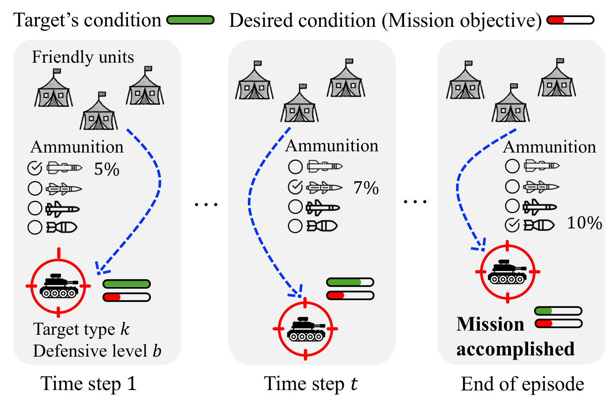
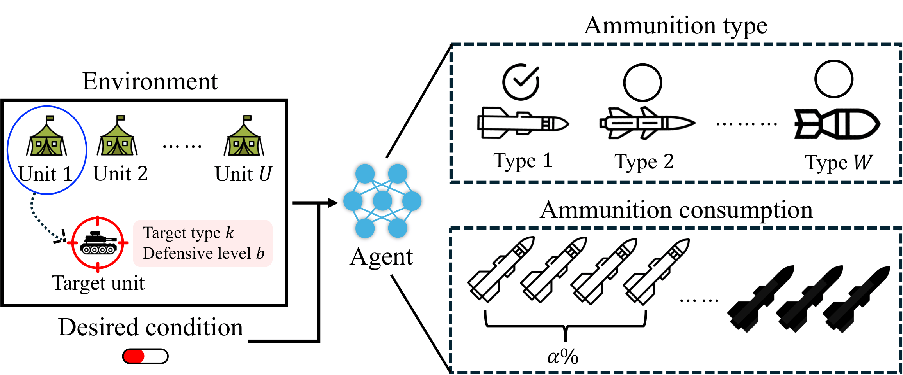
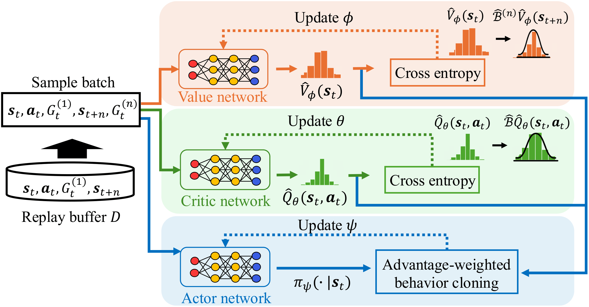
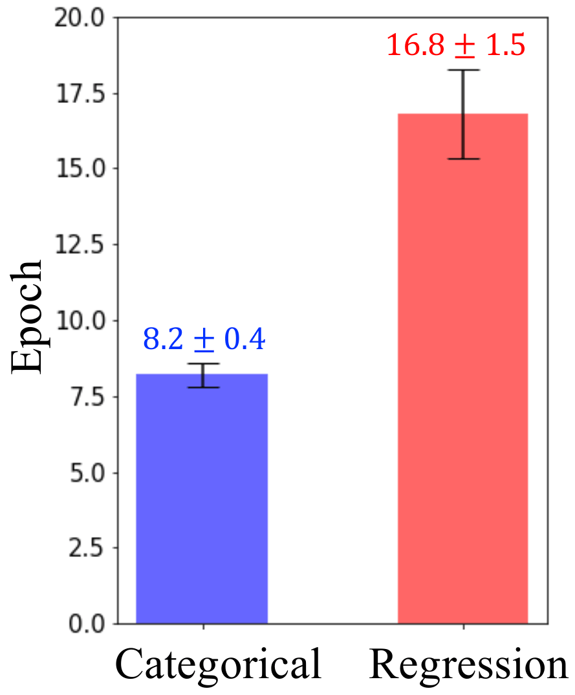
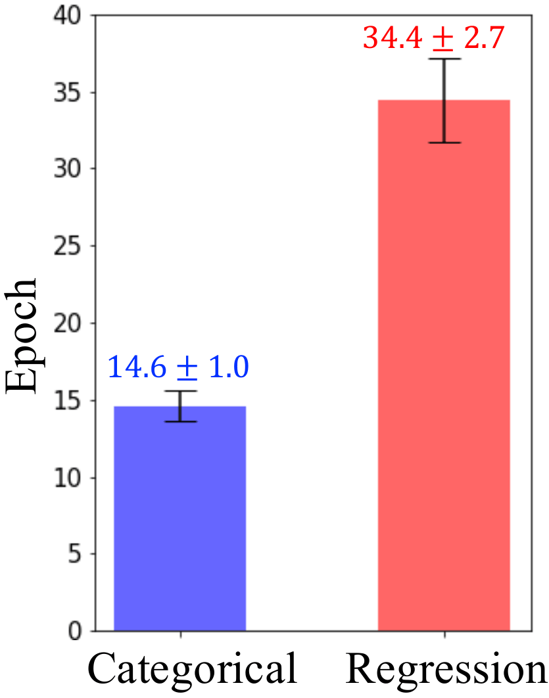
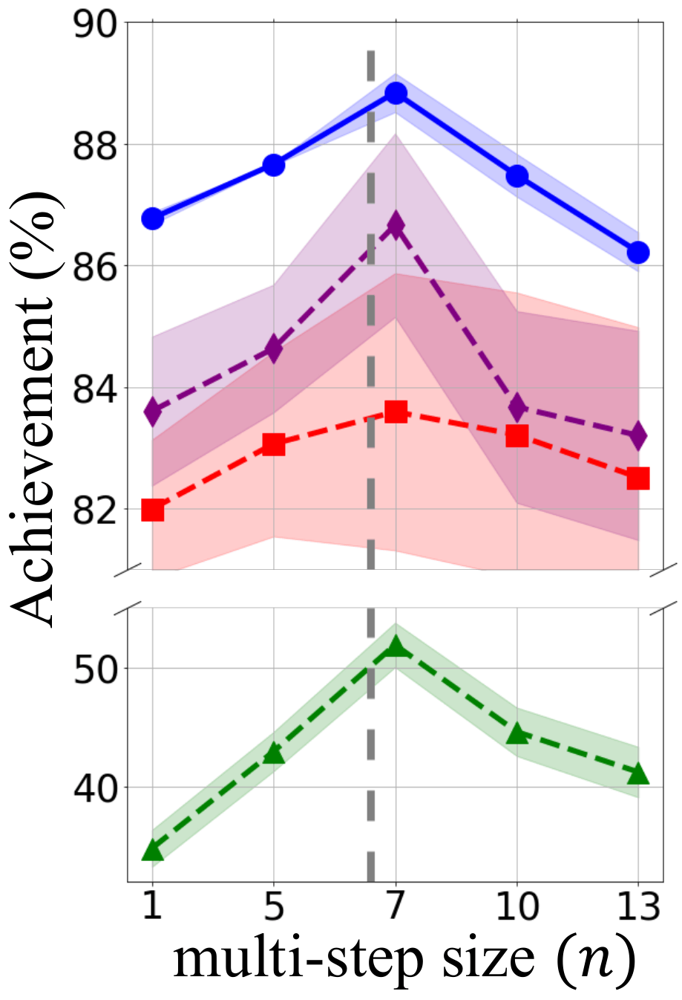
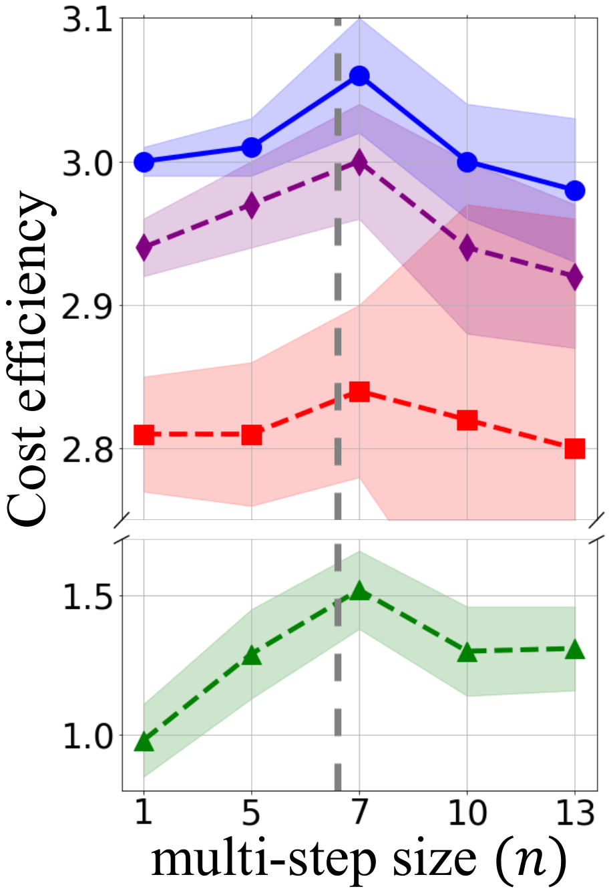
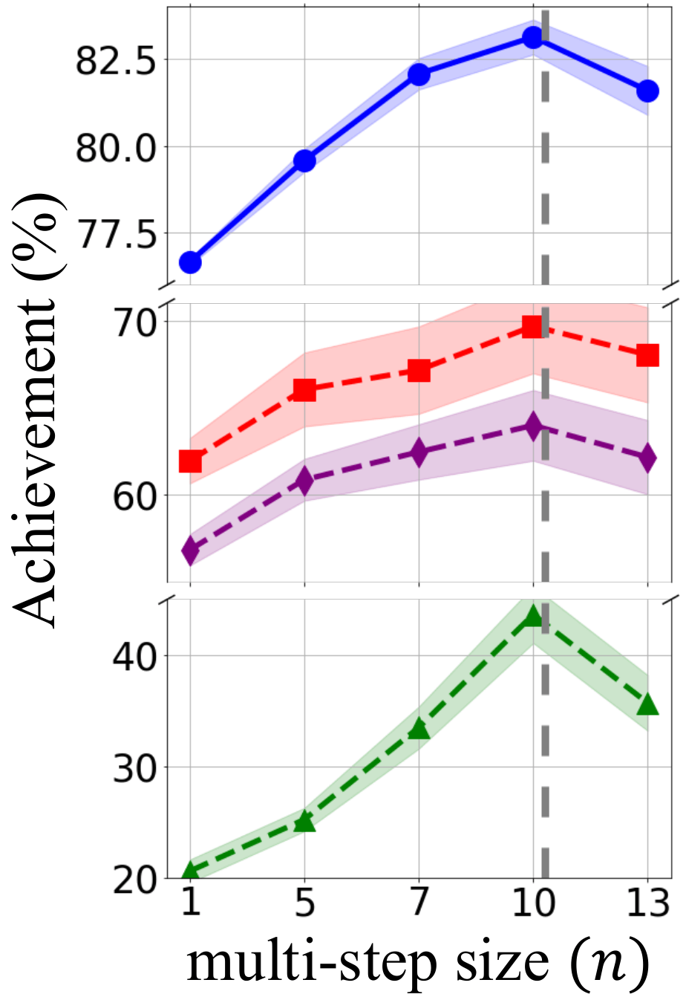
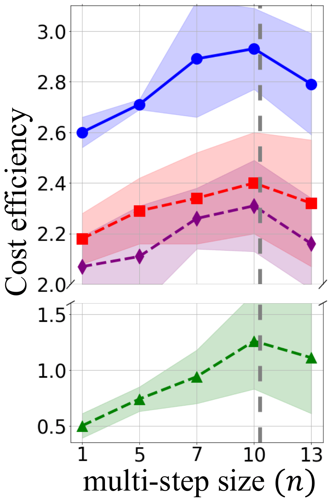
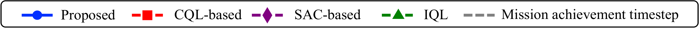

Offline Distributional Reinforcement Learning with Multi-step Returns for Combat Decision-making
A practical offline reinforcement learning framework for reliable long-horizon combat decision-making under dynamic mission objectives, target uncertainty, and ammunition-resource constraints.
Learning from pre-collected combat data without online interaction.
Problem statement
Accurate and reliable combat decision-making requires policies that operate under dynamic target information, limited ammunition resources, and commander-specified mission objectives. Online trial-and-error is unsafe or impractical in mission-critical environments, while conventional one-step TD targets can produce short-sighted value estimates that fail to capture delayed mission outcomes.
This project page summarizes an offline distributional RL framework that learns entirely from pre-collected combat data. The method combines multi-step return targets with categorical value estimators, then uses an advantage-aware actor objective to improve policy learning while avoiding unreliable out-of-distribution actions.
- Combat decisions must select both ammunition type and consumption level.
- The policy must match a commander-specified desired target condition, not simply maximize damage.
- Distributional value estimation stabilizes long-horizon learning by modeling return uncertainty rather than a single scalar value.
- Offline RL must avoid out-of-distribution action errors while still learning from mixed-quality datasets.

Distributional value learning for safer long-horizon offline RL.
Realistic MDP formulation
This work formulates dynamic combat decision-making with desired effects, target type, defensive level, target distance, target condition, and ammunition inventory.
Multi-step distributional critic
Multi-step returns improve long-horizon value targets, while categorical distributional estimation mitigates high target variance.
Advantage-aware actor
The actor combines advantage-aware policy evaluation with advantage-weighted behavioral cloning to prefer high-quality dataset actions.
Each decision controls what to use and how much to consume.

State, action, and objective
The state includes commander desired effect, target type, defensive level, target condition, distance, and remaining ammunition inventory. The action is a two-dimensional vector: ammunition type and consumption proportion. The learned policy minimizes the gap between final target condition and desired commander effect.
MDP compact view
Offline distributional actor-critic with multi-step returns.
Framework overview
The framework trains from a fixed replay buffer. A value network and critic network learn categorical return distributions using cross-entropy losses, and the actor network is updated with an advantage-aware objective. This design improves long-horizon value prediction while controlling instability from multi-step targets.
- Categorical value estimation models a full return distribution rather than only a scalar expectation.
- Multi-step returns include delayed mission effects in Bellman targets.
- Advantage-weighted BC imitates high-valued dataset actions more strongly than suboptimal ones.

Policy evaluation
Estimate value and critic return distributions through categorical Bellman targets.
Long-horizon backup
Replace one-step TD targets with n-step returns to reflect delayed outcomes.
Policy improvement
Train the actor with advantage-aware evaluation and weighted behavior cloning.
Faster convergence and stronger offline combat performance.


Convergence speed
The categorical method reaches 90% of its final convergence value substantially faster than the regression-based method. For the value network, the categorical method converges in 8.2 epochs versus 16.8 epochs. For the critic network, it converges in 14.6 epochs versus 34.4 epochs.
Categorical
Regression
Categorical
Regression
Multi-step size analysis
The proposed method consistently outperforms offline baselines across multi-step sizes. The best multi-step size aligns with the mission achievement timestep: around n=7 for Final and n=10 for Final+Medium.





Ablation: categorical estimation + multi-step return
| Configuration | Achievement | Cost eff. | Reward |
|---|---|---|---|
| Full method | 88.79 ± 0.32 | 3.06 ± 0.04 | 13.49 ± 1.04 |
| Categorical only | 86.77 ± 0.18 | 3.02 ± 0.01 | 12.49 ± 0.46 |
| Multi-step only | 83.59 ± 0.77 | 2.84 ± 0.11 | 12.83 ± 1.72 |
| Neither | 81.99 ± 0.53 | 2.81 ± 0.16 | 10.05 ± 1.18 |
Performance comparison: offline methods
| Dataset | Method | Achievement | Cost eff. | Reward |
|---|---|---|---|---|
| Final | Proposed | 88.84 ± 0.32 | 3.06 ± 0.04 | 13.49 ± 1.04 |
| Final | SAC-based | 86.66 ± 1.51 | 2.94 ± 0.02 | 10.41 ± 1.42 |
| Final | IQL | 83.59 ± 2.28 | 2.81 ± 0.04 | 10.05 ± 2.18 |
| Final+Medium | Proposed | 83.13 ± 0.50 | 2.93 ± 0.16 | 11.38 ± 3.26 |
| Final+Medium | IQL | 69.68 ± 2.71 | 2.18 ± 0.19 | -0.54 ± 0.71 |
| Final+Medium | SAC-based | 63.98 ± 2.03 | 2.07 ± 0.22 | -1.32 ± 2.09 |